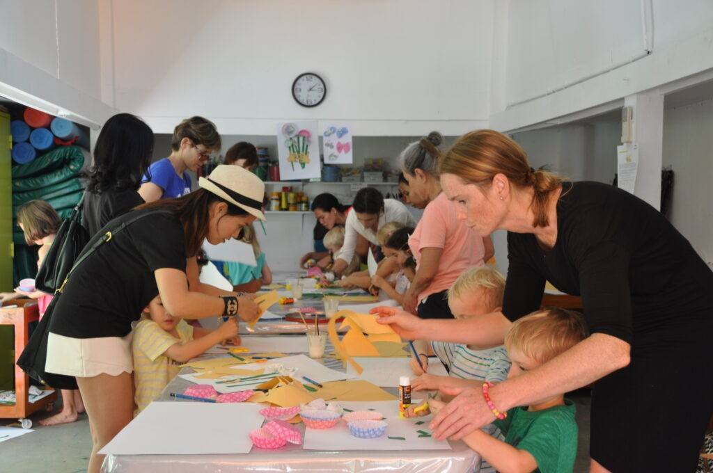

K1
Time and place are being confirmed.

The City SchoolMeet your year group, hear what the year holds, and return to the same card for the slides afterward.
Coffee mornings are an easy start to the year: meet the people who will spend the year with your child and the other families walking the same route.
There is no formal agenda. Come as you are, bring questions, and stay for as much of the conversation as you can.
Time and place are being confirmed.
Time and place are being confirmed.
Time and place are being confirmed.
Time and place are being confirmed.
Time and place are being confirmed.
Time and place are being confirmed.
Bookmark this page so dates and slides stay close.
Page address: portal.elc.ac.th/coffee-mornings/
If anything here reads oddly, use the feedback button or email the school office and we will fix it.